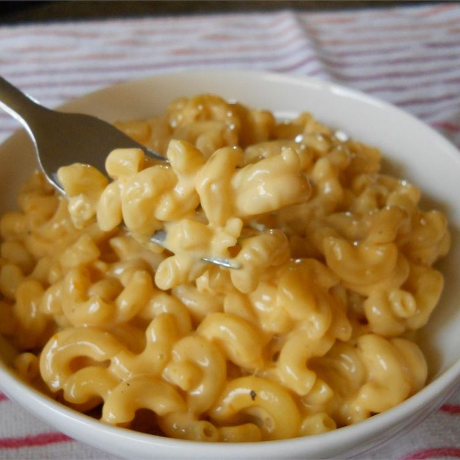

Mac & Cheeses
Home

Description:
Experience the ultimate comfort in a bowl with this Classic 3-Ingredient Mac and Cheese.
This recipe delivers a rich, velvety cheese sauce and perfectly tender pasta without the need for a flour roux or complex steps.
Whether you're looking for a quick weeknight dinner or a nostalgic side dish, this one-pot method offers peak creaminess with minimal cleanup.
Ingredients
- 4 ounces elbow macaroni
- 4 ounces cubed processed cheese food
(such as Velveeta)
- 2 fluid ounces milk
- ¼ teaspoon ground black pepper
Steps
- Bring a large pot of lightly salted water to a boil. Cook elbow macaroni in the boiling water, stirring occasionally, until tender yet firm to the bite, 8 to 10 minutes; drain.
- Place a saucepan over medium-low heat; add cheese , milk, and black pepper. Cook until cheese has melted, stirring frequently. Stir in drained macaroni until evenly coated.